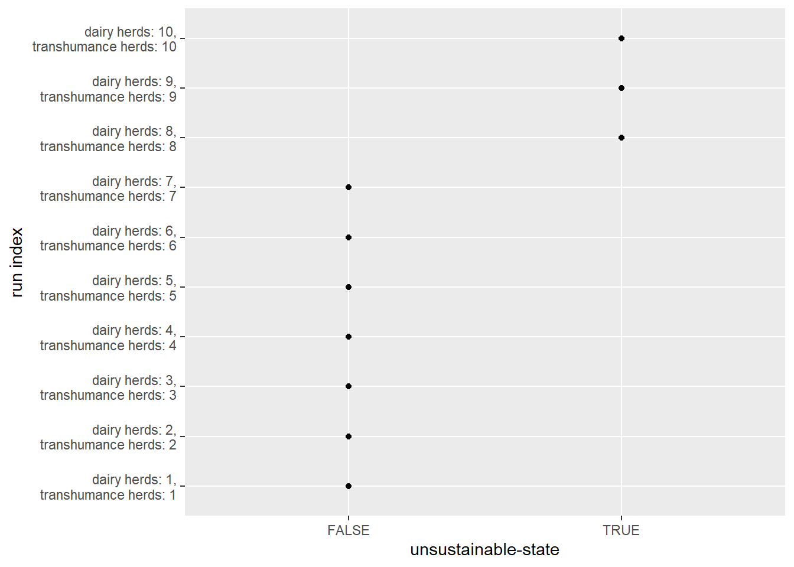
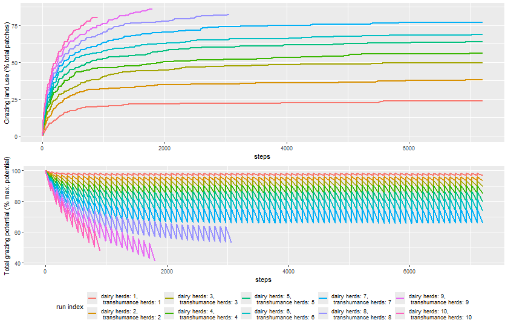
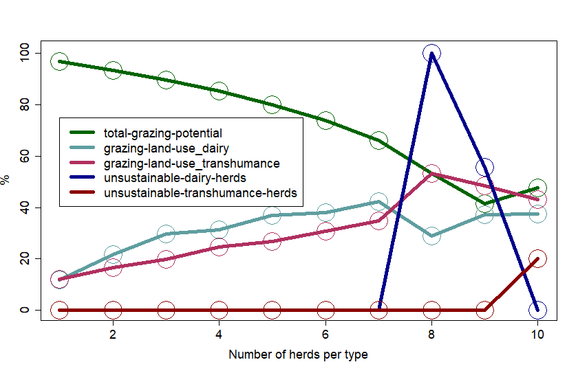
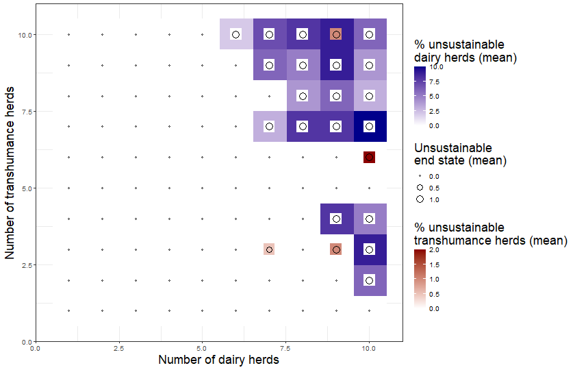
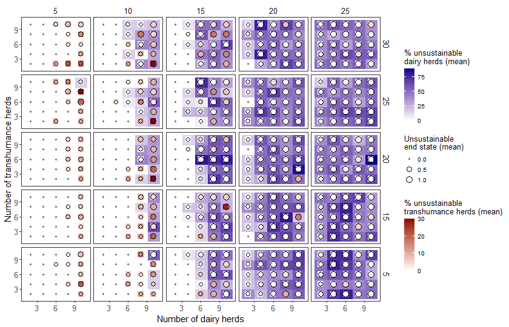

library(nlrx)3 Sensitivity analysis
library(dplyr)
Attaching package: 'dplyr'The following objects are masked from 'package:stats':
filter, lagThe following objects are masked from 'package:base':
intersect, setdiff, setequal, unionlibrary(readr)
library(ggplot2)
library(gridExtra)
Attaching package: 'gridExtra'The following object is masked from 'package:dplyr':
combinelibrary(scales)
Attaching package: 'scales'The following object is masked from 'package:readr':
col_factor# Windows default NetLogo installation path (adjust to your needs!):
netlogopath <- file.path("E:/Program files/NetLogo 6.4.0")
modelpath <- file.path("model/dairy-vs-transhumance-v1.nlogo")
outpath <- file.path("output")observer_variables <- c("season", "day",
"population-size-dairy",
"population-size-transhumance",
"total-grazing-potential_localMax",
"dairy-pressure-coef",
"transhumance-pressure-coef",
"dairy-hut-count",
"total-occupation-layers",
"total-grazing-potential",
"grazing-land-use",
"grazing-land-use_dairy",
"grazing-land-use_transhumance",
"record_total-grazing-potential",
"record_grazing-land-use",
"unsustainable-state",
"unsustainable-dairy-herds",
"unsustainable-transhumance-herds")3.1 Parameter sweeps: symmetric gradient
nl_batch_1 <- nl(nlversion = "6.4.0",
nlpath = netlogopath,
modelpath = modelpath,
jvmmem = 1024)default_parameters <- list(
"seed" = 123,
"type-of-experiment" = "\"user-defined\"",
"gui_area-width" = 50, "gui_area-height" = 25,
"gui_conflict-avoidance" = "true",
"gui_grazing-potential_max" = 250,
"gui_herd-size-dairy" = 10,
"gui_herd-size-transhumance" = 50,
"display-mode" = "\"grazing-potential\""
)
sweep_parameters <- list(
"gui_number-herds-dairy" = list(values = 1:10),
"gui_number-herds-transhumance" = list(values = 1:10)
)
expname <- "sensitivity-param-sweep-symmetric"nl_batch_1@experiment <- experiment(expname = expname,
outpath = outpath,
repetition = 1,
tickmetrics = "true",
idsetup = "setup",
idgo = "go",
idfinal = NA_character_,
idrunnum = NA_character_,
runtime = 10^4,
evalticks = NA_integer_,
metrics = observer_variables,
variables = sweep_parameters,
constants = default_parameters)
nl_batch_1@simdesign <- simdesign_distinct(nl = nl_batch_1,
nseeds = 1)eval_variables_constants(nl_batch_1)
print(nl_batch_1)
results_batch_1 <- run_nl_all(nl_batch_1)Calculate relative metrics:
total_number_patches <- default_parameters$`gui_area-width` * default_parameters$`gui_area-height`
results_batch_1 <- results_batch_1 %>%
mutate(dairy_hut_density_percent = 100 * `dairy-hut-count` / total_number_patches,
mean_occupation_layers_per_hut = `total-occupation-layers` / `dairy-hut-count`)Attach results to nl_single object:
setsim(nl_batch_1, "simoutput") <- results_batch_1Write output to outpath:
write_simoutput(nl_batch_1)Read output:
results_batch_1 <- read_csv(paste0(outpath, "/", expname, "_distinct.csv"))Rows: 56170 Columns: 35
── Column specification ────────────────────────────────────────────────────────
Delimiter: ","
chr (4): type-of-experiment, display-mode, record_total-grazing-potential, ...
dbl (29): [run number], gui_number-herds-dairy, gui_number-herds-transhumanc...
lgl (2): gui_conflict-avoidance, unsustainable-state
ℹ Use `spec()` to retrieve the full column specification for this data.
ℹ Specify the column types or set `show_col_types = FALSE` to quiet this message.Generate labels for each run:
run_labels <- unique(paste0(
"dairy herds: ", results_batch_1$`gui_number-herds-dairy`,
",\n transhumance herds: ", results_batch_1$`gui_number-herds-dairy`))Get end states:
results_batch_1_endstate <- results_batch_1 %>%
group_by(`siminputrow`) %>%
filter(`[step]` == max (`[step]`)) %>%
ungroup()Preview how many runs are unsustainable:
table(results_batch_1_endstate$`unsustainable-state`)
FALSE TRUE
7 3 ggplot(results_batch_1_endstate, aes(y = factor(`siminputrow`), x = `unsustainable-state`)) +
geom_point() +
scale_y_discrete(labels = run_labels) +
labs(y = "run index")
Plot trajectories of metrics:
plot_name <- paste(outpath, "sensitivity_batch_1_trajectories.png", sep = "/")
png(plot_name, width = 840, height = 540)
grazing_trajectories <- ggplot(results_batch_1, aes(x = `[step]`, group = factor(`siminputrow`))) +
geom_path(aes(y = `grazing-land-use`,
color = factor(`siminputrow`)),
linewidth = 1) +
scale_color_discrete(name = "run index", labels = run_labels, guide = "none") +
labs(x = "steps", y = "Grazing land use (% total patches)")
land_use_trajectories <- ggplot(results_batch_1, aes(x = `[step]`, group = factor(`siminputrow`))) +
geom_path(aes(y = `total-grazing-potential`,
color = factor(`siminputrow`)),
linewidth = 1) +
scale_color_discrete(name = "run index", labels = run_labels) +
labs(x = "steps", y = "Total grazing potential (% max. potential)") +
theme(legend.position = "bottom")
grid.arrange(grazing_trajectories, land_use_trajectories, nrow = 2)
dev.off()png
2 rm(grazing_trajectories, land_use_trajectories)knitr::include_graphics(plot_name)
Plot bifurcation plot:
source("library/bifurcationPlot.R")
plot_name <- paste(outpath, "sensitivity_batch_1_symmetric_bifurcationPlot.png", sep = "/")
observed_variables <- c("total-grazing-potential",
"grazing-land-use_dairy",
"grazing-land-use_transhumance",
"unsustainable-dairy-herds",
"unsustainable-transhumance-herds")
png(plot_name, width = 840, height = 540)
bifurcationPlotSimple(parameter_values = results_batch_1_endstate$`gui_number-herds-dairy`,
observed_variables = results_batch_1_endstate[, observed_variables],
parameter_x_label = "Number of herds per type",
variable_y_label = "%",
variable_names = observed_variables,
col = c("darkgreen", "cadetblue", "maroon", "darkblue", "darkred"),
legend_position = c(1, 75),
cex = 5)
dev.off()png
2 knitr::include_graphics(plot_name)
rm(nl_batch_1)3.2 Parameter sweeps: permutation gradient (2x)
nl_batch_2 <- nl(nlversion = "6.4.0",
nlpath = netlogopath,
modelpath = modelpath,
jvmmem = 1024)default_parameters <- list(
"type-of-experiment" = "\"user-defined\"",
"gui_area-width" = 50, "gui_area-height" = 25,
"gui_conflict-avoidance" = "true",
"gui_grazing-potential_max" = 250,
"gui_herd-size-dairy" = 10,
"gui_herd-size-transhumance" = 50,
"display-mode" = "\"grazing-potential\""
)
sweep_parameters <- list(
"seed" = list(values = 0:2),
"gui_number-herds-dairy" = list(values = 1:10),
"gui_number-herds-transhumance" = list(values = 1:10)
)
expname <- "sensitivity-param-sweep-permutation_2x"nl_batch_2@experiment <- experiment(expname = expname,
outpath = outpath,
repetition = 1,
tickmetrics = "false", # measure only final state
idsetup = "setup",
idgo = "go",
idfinal = NA_character_,
idrunnum = NA_character_,
runtime = 10^4,
#evalticks = NA_integer_,
metrics = observer_variables,
variables = sweep_parameters,
constants = default_parameters)
nl_batch_2@simdesign <- simdesign_ff(nl = nl_batch_2,
nseeds = 1)eval_variables_constants(nl_batch_2)
print(nl_batch_2)
results_batch_2 <- run_nl_all(nl_batch_2, split = 4)Simplify names:
results_batch_2 <- results_batch_2 %>%
rename_with( ~ gsub("\\-", "_", oldnames)) %>%
rename_with( ~ gsub("\\[", "", oldnames)) %>%
rename_with( ~ gsub("\\]", "", oldnames))Calculate relative metrics:
total_number_patches <- default_parameters$`gui_area-width` * default_parameters$`gui_area-height`
results_batch_2 <- results_batch_2 %>%
mutate(dairy_hut_density_percent = 100 * dairy_hut_count / total_number_patches,
mean_occupation_layers_per_hut = total_occupation_layers / dairy_hut_count)Attach results to nl_single object:
setsim(nl_batch_2, "simoutput") <- results_batch_2Write output to outpath:
write_simoutput(nl_batch_2)Read output:
results_batch_2 <- readr::read_csv(paste0(outpath, "/", expname, "_ff", ".csv"))Get end states:
results_batch_2_endstate <- results_batch_2 %>%
mutate(parameter_config = paste(gui_number_herds_dairy, gui_number_herds_transhumance, sep = " vs ")) %>%
group_by(parameter_config) %>%
filter(step == max (step))Calculate mean values per parameter configuration:
results_batch_2_endstate <- results_batch_2_endstate %>%
group_by(parameter_config) %>%
summarise(
number_herds_dairy = mean(gui_number_herds_dairy),
number_herds_transhumance = mean(gui_number_herds_transhumance),
unsustainable_dairy_herds_mean = mean(unsustainable_dairy_herds),
unsustainable_transhumance_herds_mean = mean(unsustainable_transhumance_herds),
unsustainable_state_mean = mean(as.numeric(unsustainable_state))
)expname_endstates <- paste0(outpath, "/", expname, "_ff_endstates", ".csv")Write end state dataset to outpath:
write_csv(results_batch_2_endstate, expname_endstates)Read end state dataset:
results_batch_2_endstate <- readr::read_csv(expname_endstates)Rows: 100 Columns: 6
── Column specification ────────────────────────────────────────────────────────
Delimiter: ","
chr (1): parameter_config
dbl (5): number_herds_dairy, number_herds_transhumance, unsustainable_dairy_...
ℹ Use `spec()` to retrieve the full column specification for this data.
ℹ Specify the column types or set `show_col_types = FALSE` to quiet this message.Plot triple raster (3 variables, 2 parameters):
source("library/tripleRaster_twoParameters.R")
plot_name <- paste(outpath, "sensitivity_batch_2_permutation_tripleRaster.png", sep = "/")
png(plot_name, width = 840, height = 540)
tripleRaster_twoParameters(
results_batch_2_endstate,
parameter_x = "number_herds_dairy",
parameter_y = "number_herds_transhumance",
variable_1 = "unsustainable_dairy_herds_mean",
variable_2 = "unsustainable_transhumance_herds_mean",
variable_3 = "unsustainable_state_mean",
parameter_x_label = "Number of dairy herds",
parameter_y_label = "Number of transhumance herds",
variable_1_label = "% unsustainable\ndairy herds (mean)",
variable_2_label = "% unsustainable\ntranshumance herds (mean)",
variable_3_label = "Unsustainable\nend state (mean)",
plot_scale = 5,
variable_3_point_number_legend_keys = 3,
variable_3_print_values = FALSE)Warning: `aes_string()` was deprecated in ggplot2 3.0.0.
ℹ Please use tidy evaluation idioms with `aes()`.
ℹ See also `vignette("ggplot2-in-packages")` for more information.dev.off()png
2 knitr::include_graphics(plot_name)
rm(nl_batch_2)3.3 Parameter sweeps: permutation gradient (4x)
NOTE: Due to performance issues with nlrx, this experiment is performed in NetLogo’s Behavior Space.
expname <- "dairy-vs-transhumance-v1 herd population experiment-table"
results_batch_3 <- read.csv(
paste0(outpath, "/", expname, ".csv"),
skip = 6)default_parameters <- list(
"type-of-experiment" = results_batch_3$type.of.experiment[1],
"gui_area-width" = results_batch_3$gui_area.width[1],
"gui_area-height" = results_batch_3$gui_area.height[1],
"gui_conflict-avoidance" = results_batch_3$gui_conflict.avoidance[1],
"gui_grazing-potential_max" = results_batch_3$gui_grazing.potential_max[1],
"display-mode" = results_batch_3$display.mode[1]
)
sweep_parameters <- list(
"seed" = unique(results_batch_3$seed),
"gui_number-herds-dairy" = unique(results_batch_3$gui_number.herds.dairy),
"gui_number-herds-transhumance" = unique(results_batch_3$gui_number.herds.transhumance),
"gui_herd-size-dairy" = unique(results_batch_3$gui_herd.size.dairy),
"gui_herd-size-transhumance" = unique(results_batch_3$gui_herd.size.transhumance)
)Rename run number and step:
results_batch_3 <- results_batch_3 %>%
rename(run_number = X.run.number.) %>%
rename(step = X.step.)Calculate relative metrics:
total_number_patches <- default_parameters$`gui_area-width` * default_parameters$`gui_area-height`
results_batch_3 <- results_batch_3 %>%
mutate(dairy_hut_density_percent = 100 * dairy.hut.count / total_number_patches,
mean_occupation_layers_per_hut = total.occupation.layers / dairy.hut.count)Filter out configurations:
results_batch_3_endstate <- results_batch_3 %>%
mutate(parameter_config = paste0(
gui_number.herds.dairy, " x ", gui_herd.size.dairy, " vs ",
gui_number.herds.transhumance, " x ", gui_herd.size.transhumance)) %>%
filter(gui_number.herds.dairy %in% sweep_parameters$`gui_number-herds-dairy`[1:5]) %>%
filter(gui_number.herds.transhumance %in% sweep_parameters$`gui_number-herds-transhumance`[1:5]) %>%
filter(gui_herd.size.dairy %in% sweep_parameters$`gui_herd-size-dairy`[1:5]) %>%
filter(gui_herd.size.transhumance %in% unique(sweep_parameters$`gui_herd-size-transhumance`[1:5]))Calculate mean values per parameter configuration:
results_batch_3_endstate <- results_batch_3_endstate %>%
group_by(parameter_config) %>%
summarise(
number_herds_dairy = mean(gui_number.herds.dairy),
number_herds_transhumance = mean(gui_number.herds.transhumance),
herd_size_dairy = mean(gui_herd.size.dairy),
herd_size_transhumance = mean(gui_herd.size.transhumance),
unsustainable_dairy_herds_mean = mean(unsustainable.dairy.herds),
unsustainable_transhumance_herds_mean = mean(unsustainable.transhumance.herds),
unsustainable_state_sum = mean(ifelse(unsustainable.state == "true", 1, 0))
)Plot triple raster (3 variables, 4 parameters):
source("library/tripleRaster_fourParameters.R")
plot_name <- paste(outpath, "sensitivity_batch_3_permutation_tripleRaster.png", sep = "/")
png(plot_name, width = 840, height = 540)
tripleRaster_fourParameters(
results_batch_3_endstate,
parameter_x = "number_herds_dairy",
parameter_y = "number_herds_transhumance",
parameter_strip_x = "herd_size_dairy",
parameter_strip_y = "herd_size_transhumance",
variable_1 = "unsustainable_dairy_herds_mean",
variable_2 = "unsustainable_transhumance_herds_mean",
variable_3 = "unsustainable_state_sum",
parameter_x_label = "Number of dairy herds",
parameter_y_label = "Number of transhumance herds",
variable_1_label = "% unsustainable\ndairy herds (mean)",
variable_2_label = "% unsustainable\ntranshumance herds (mean)",
variable_3_label = "Unsustainable\nend state (mean)",
plot_scale = 5,
#variable_3_value_label_size = 0.4,
# variable_3_point_size = c(0.2, 1),
# axis_title_size = 5,
axis_text_size = 2.5,
#strip_parameter_name_max_length = 2,
#strip_parameter_name_occlusion_text = "herd size",
strip_text_size = 2.5,
legend_title_size = 2.5,
legend_text_size = 2,
variable_3_point_number_legend_keys = 3,
variable_3_print_values = FALSE
)
dev.off()png
2 knitr::include_graphics(plot_name)